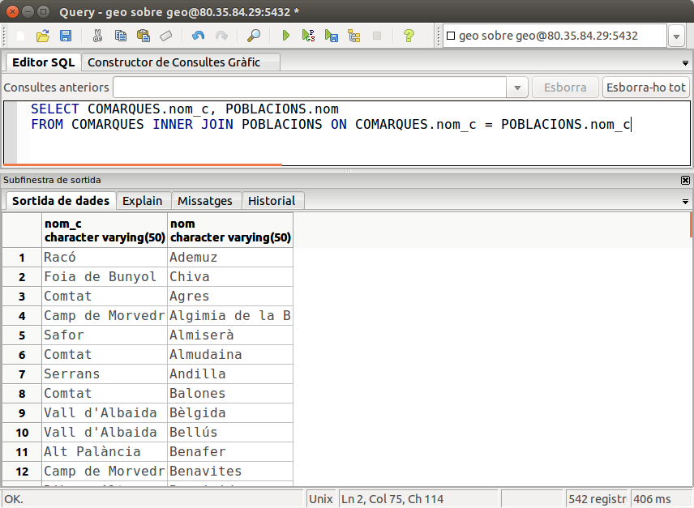

2.2.2 Combinació interna
Combinació de dues taules: Sintaxi
Normalment el producte cartesià no ens interessarà. Més bé voldrem combinar les taules de manera que dos camps, un camp de cada taula, coincidesquen. I el més habitual, si tenim la Base de Dades ben dissenyada, serà que els camps coincidents siguen una clau externa amb la clau principal a la qual apunta. Així, en l'exemple que utilitzàvem en el punt anterior, el que sí que ens serà útil és combinar cada comarca amb les seues poblacions. I justament tenim un camp en la taula POBLACIONS, nom_c, que és clau externa i apunta a la clau principal de COMARQUES.
Aquesta operació l'anomenarem COMBINACIÓ INTERNA o senzillament COMBINACIÓ, i de vegades també es diu REUNIÓ. La seua sintaxi és la següent:
SELECT ...
FROM taula1 INNER JOIN taula2 ON condició
i on la condició de la reunió consistirà en comparar un camp de cada taula. Els dos camps hauran de ser del mateix tipus, però no caldrà que tinguen el mateix nom. Les files que eixiran al resultat seran les que acompliran la condició.
Encara que els operadors que es poden utilitzar són tots els de comparació, en la pràctica SEMPRE utilitzarem el d'igualar. Per tant podem refinar millor la combinació de 2 taules
SELECT ...
FROM taula1 INNER JOIN taula2 ON taula1.camp1 = taula2.camp2
L'exemple de les comarques i les seues poblacions quedarà així
SELECT COMARQUES.nom_c, POBLACIONS.nom
FROM COMARQUES INNER JOIN POBLACIONS ON COMARQUES.nom_c = POBLACIONS.nom_c
I aquest seria el resultat

que com veiem torna 542 files (tantes com pobles)
Alternativament, podríem posar la mateixa reunió d'una altra forma:
SELECT COMARQUES.nom_c, POBLACIONS.nom
FROM COMARQUES,POBLACIONS
WHERE COMARQUES.nom_c = POBLACIONS.nom_c
on estrictament el que estem fent és, del producte cartesià de les 2 taules, seleccionar únicament quan coincideix el nom_c (és a dir la comarca amb les seues poblacions), i per tant el resultat seria el mateix. Potser fóra més eficient utilitzar la primera manera, però de vegades la comoditat ens farà utilitzar la segona (sobretot quan s'hagen de combinar moltes taules).
Les dues maneres de posar la conbinació de dues taules són les més habituals, i que funcionen en qualsevol Sistema Gestor de Bases de Dades.
Tanmateix en PostgreSQL (i en altres SGBD com Oracle) hi ha més maneres de fer una combinació. No les veurem tan a fons perquè les anteriors ens basten i sobren:
- INNER JOIN amb USING: En el cas que els camps a reunir de les dues taules es diguen exactament igual, podem substituir la condició posada en ON per l'expressió USING, amb el camp de la reunió entre parèntesis
SELECT COMARQUES.nom_c, POBLACIONS.nom
FROM COMARQUES INNER JOIN POBLACIONS USING (nom_c)
- NATURAL JOIN: També per al cas anterior, en què el camp en les dues taules es diu igual, podem fer-lo de forma encara més abreviada. Farà una reunió, igualant tots els camps que es diguen igual de les dues taules. Hem d'anar en compte, per si de cas hi ha algun altre camp en les dues taules que es diga igual.
SELECT COMARQUES.nom_c, POBLACIONS.nom
FROM COMARQUES NATURAL JOIN POBLACIONS
Exemples
-
Traure el noms de les Poblacions i els noms dels Instituts que hi ha en elles.
Haurem de combinar les taules per la clau externa d'INSTITUTS a POBLACIONS (és a dir la que apunta de cod_m en INSTITUTS fins a la clau principal de COMARQUES, que és justament cod_m).
SELECT POBLACIONS.nom,INSTITUTS.nom
FROM POBLACIONS INNER JOIN INSTITUTS ON POBLACIONS.cod_m=INSTITUTS.cod_m;Utilitzant l'altra sintaxi, que posem la condició en el WHERE, ens quedaria:
SELECT POBLACIONS.nom,INSTITUTS.nom
FROM POBLACIONS , INSTITUTS
WHERE POBLACIONS.cod_m=INSTITUTS.cod_m;Com en aquest cas el camp que hem d'igualar té el mateix nom en les dues taules, utilitzant la sintaxi del USING ens quedari més fàcil:
SELECT POBLACIONS.nom,INSTITUTS.nom
FROM POBLACIONS INNER JOIN INSTITUTS USING(cod_m);En canvi, hem d'anar amb molt de compte amb la sintaxi del NATURAL JOIN, perquè itentarà igualar tots els camps que es diuen igual, i en aquest cas tenim dos camps coincidents: cod_m i nom. cod_m és el que volem, però nom ens fastidiarà, i evidentment no coincideix mai el nom de l'Institut i el de la població, i per tant no tornarà cap fila.
SELECT POBLACIONS.nom,INSTITUTS.nom
FROM POBLACIONS NATURAL JOIN INSTITUTS; -
Traure els noms de les comarques i la província, amb el nombre de poblacions que té cada comarca.
Ens fan falta dues taules, COMARQUES per a poder traure el nom de la comarca i la província, i POBLACIONS per a poder comptar els pobles de cada comarca. Les haurem de combinar, agrupar per comarca (i província també, perquè volem que aparega el nom de la província) i comptar les poblacions. A l'hora de comptar podem comptar files (COUNT(*)), però potser siga millor comptar algun camp de la taula POBLACIONS, per exemple cod_m, que és la clau principal (recordem que els valors nuls no es comptaran, i cod_m per ser clau principal no pot ser nul).
SELECT COMARQUES.nom_c, provincia, COUNT(cod_m) AS Quants
FROM COMARQUES INNER JOIN POBLACIONS ON COMARQUES.nom_c=POBLACIONS.nom_c
GROUP BY COMARQUES.nom_c, provincia;
Tres o més taules
Si tenim més de 2 taules, haurem de procedir de la mateixa manera, ja que si deixem de combinar alguna taula, tindrem el producte cartesià. Com en la immensa majoria de casos, la reunió la farem per les claus externes que tenim definides. Únicament haurem de cuidar els parèntesis, per a marcar primer una condició de combinació i després l'altra. En un exemple ho veurem perfectament il·lustrat.
Intentem traure el nom d'una comarca i la província, el nom dels seus pobles i el nom dels instituts d'aquestos pobles. Ens fan falta les taules COMARQUES (pera poder traure el nom de la comarca i província), POBLACIONS (per a traure el nom de la població) i INSTITUTS (per al nom d'aquestos). Ordenarem per nom de comarca, i dins d'aquest per població, per a una millor lectura del resultat
SELECT COMARQUES.nom_c, provincia, POBLACIONS.nom, INSTITUTS.nom
FROM (COMARQUES INNER JOIN POBLACIONS ON COMARQUES.nom_c=POBLACIONS.nom_c)
INNER JOIN INSTITUTS ON POBLACIONS.cod_m=INSTITUTS.cod_m
ORDER BY 1,3;
Podríem posar la consulta de la forma alternativa, en què les condicions de reunió van en el WHERE. Òbviament aquestes condicions han d'anar unides per l'operador AND.
SELECT COMARQUES.nom_c, provincia, POBLACIONS.nom, INSTITUTS.nom
FROM COMARQUES , POBLACIONS , INSTITUTS
WHERE COMARQUES.nom_c=POBLACIONS.nom_c AND POBLACIONS.cod_m=INSTITUTS.cod_m
ORDER BY 1,3;
Anem a plantejar un altre exemple. Es tracta de traure el nom i la província de les comarques, amb el número d'Instituts que hi ha en elles. En principi podríem pensar que les úniques taules que ens fan falta són COMARQUES (per a traure el nom i província de la comarca) i INSTITUTS (per a poder comptar els INSTITUTS). Si intentem fer aquesta consulta, NO obtindrem el resultat desitjat.
SELECT nom_c, provincia, COUNT(codi)
FROM COMARQUES , INSTITUTS
GROUP BY nom_c, provincia
Evidentment hi haurà un producte cartesià, ja que no hem combinat les taules, i ens eixirà per a cada comarca 375 instituts, que és el número total d'instituts, ja que s'ha combinat cada comarca amb tots els instituts.
Però aleshores, per quin camp combinem? Si intentem unir les claus principals, nom_c amb codi (el codi d'Institut) no poden combinar bé per raons evidents. Ens hem de fixar en el disseny de la Base de Dades. Observarem que el problema és que no hi ha una clau externa entre INSTITUTS i COMARQUES. Però també ens dóna la solució: haurem de posar també la taula POBLACIONS encara que no vulguem visualitzar cap camp d'aquesta taula, ja que si estan relacionades les taules INSTITUTS i COMARQUES és a través d'aquesta taula. Per tant la consulta correcta serà:
SELECT COMARQUES.nom_c, provincia, COUNT(codi)
FROM (COMARQUES INNER JOIN POBLACIONS ON COMARQUES.nom_c=POBLACIONS.nom_c)
INNER JOIN INSTITUTS ON POBLACIONS.cod_m=INSTITUTS.cod_m
GROUP BY COMARQUES.nom_c, provincia
La forma alternativa sembla més curta. Està clar que si són 3 taules, hauran d'haver 2 condicions de combinació unides per AND.
SELECT COMARQUES.nom_c, provincia, COUNT(codi)
FROM COMARQUES , POBLACIONS , INSTITUTS
WHERE COMARQUES.nom_c=POBLACIONS.nom_c AND POBLACIONS.cod_m=INSTITUTS.cod_m
GROUP BY COMARQUES.nom_c, provincia;
De forma general, si tenim n taules en una consulta, ens faran falta n-1 condicions de combinació unides per AND. Per exemple, si en una consulta entren 5 taules, per a no tenir cap producte cartesià ens faran falta 4 condicions unides per AND.
Una taula més d'una vegada.
Anem a plantejar un altre exemple interessant: traure el nom de les poblacions, amb el nom de la capital de comarca. Lamentablement amb les dades que tenim en la Base de Dades d'exemple no podrem provar-lo, així que anem a fer una suposició, una Base de Dades lleugerament modificada per a il·lustrar aquest exemple.
Suposem que la nostra taula de POBLACIONS fóra lleugerament diferent, i que incorporara un camp nou amb el codi del municipi que és capital de comarca de la població:
POBLACIONS
(
cod_m numeric(5,0) CONSTRAINT cp_pobl PRIMARY KEY,
nom character varying(50) NOT NULL,
poblacio numeric(6,0),
extensio numeric(6,2),
altura numeric(4,0),
longitud character varying(50),
latitud character varying(50),
llengua character(1),
nom_c character varying(50),
cod_capital numeric(5,0) CONSTRAINT ce_capital REFERENCES POBLACIONS(cod_m)
)
Per a poder traure al mateix temps el nom de les poblacions i el nom de la seua capital de comarca no tenim prou amb posar la taula POBLACIONS una vegada: només trauríem el nom de la població i ens quedaríem amb el codi de municipi de la capital. La solució serà reunir-la amb la taula POBLACIONS, posant-la una segona vegada per a tenir dues instàncies de la taula, una instància per al població normal i una altra per a la capital. Però com distingirem entre les dues instàncies? Doncs posant un nom a cadascuna. En general podem posar un nom en la sentència a qualsevol taula que aparega, posant aquest nom a continuació de la taula (opcionalment podríem posar AS enmig):
SELECT ...
FROM taula T
En la resta de la consulta haurem d'utilitzar aquest nom. L'exemple quedarà de la següent manera:
SELECT P1.nom AS "Nom població" , P2.nom as "Nom capital"
FROM POBLACIONS P1 INNER JOIN POBLACIONS P2 ON P1.cod_capital=P2.cod_m
o de la forma alternativa:
SELECT P1.nom AS "Nom població" , P2.nom as "Nom capital"
FROM POBLACIONS P1, POBLACIONS P2
WHERE P1.cod_capital=P2.cod_m
Nota
Recordeu que aquestes instruccions no les podem provar, perquè no tenim el camp cod_capital.
Clau externa formada per més d'un camp
Per últim anem a considerar el cas que la clau externa estiga formada per més d'un camp. Ho basarem en l'exemple dels Bancs, on la taula COMPTE CORRENT depèn en identificació de SUCURSAL. Com la clau principal de SUCURSAL està formada per 2 camps, la clau externa de COMPTE CORRENT, que apunta a la primera també estarà formada per 2 camps. Si volem traure el número de compte corrent, el nom de la sucursal d'on és el compte, i el saldo, ens faran falta les dues taules. Aquesta seria la manera de combinar-les:
SELECT C.n_ent , C.n_suc , n_cc , S.nom , C.saldo
FROM SUCURSAL S INNER JOIN COMPTE_CORRENT C ON S.n_ent=C.n_ent AND S.n_suc=C.n_suc
o de la forma alternativa:
SELECT C.n_ent , C.n_suc , n_cc , S.nom , C.saldo
FROM SUCURSAL S, COMPTE_CORRENT C
WHERE S.n_ent=C.n_ent AND S.n_suc=C.n_suc
En ambdós casos s'ha optat per posar nom a les taules (S i C respectivament) per comoditat, per a que no quedara tan llarga la consulta.
Llicenciat sota la Llicència Creative Commons Reconeixement NoComercial SenseObraDerivada 2.5